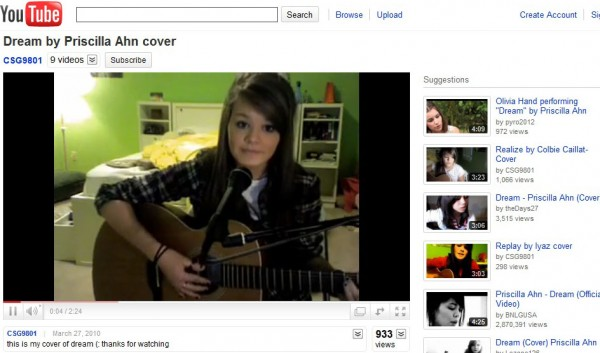

Historia
Desde la creacion de plataformas de livestreaming y/o videos en la red, durante muchos años podias utilizar cualquier tipo de canción para la creacion de tu contenido de cualquier tipo. Eso cambio años despues cuando las empresas al ver que Youtube estaba generando muchas vistas y cada vez se hacia mucho mas popular, se pusieron muchos muy estrictos respecto a la aplicacion de los derechos de autor (Copyright) lo cual hizo que la gran parte de canales y videos fueran dados de baja a lo largo de los años.
Proposito
Durante estos tiempos de Pandemia donde gran parte de la gente que consume internet tiene mas tiempo libre del que solia tener antes, quiero armar un lugar donde la gente pueda encontrar musica la cual este libre de derechos de autor puramente con fines de que las personas puedan crear contenido con esta!